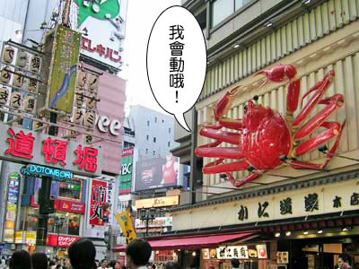

本網站刊登之所有文字．圖片資訊均受版權法保護 嚴禁擅自複製．轉載
Copyright © 2012 Flag Japan Co.,Ltd. All rights reserved.
本網站刊登之所有文字．圖片資訊均受版權法保護 嚴禁擅自複製．轉載
Copyright © 2012 Flag Japan Co.,Ltd. All rights reserved.

日本全國分為47個行政區，稱為都道府縣。
北海道˙東北：北海道 | 青森 | 岩手 | 宮城 | 秋田 | 山形 | 福島
關東：東京 | 神奈川 | 埼玉 | 千葉 | 茨城 | 栃木 | 群馬
信越˙北陸：新潟 | 長野 | 富山 | 石川 | 福井 | 山梨
東海：愛知 | 岐阜 | 静岡 | 三重
關西（近畿）：大阪 | 兵庫 | 京都 | 滋賀 | 奈良 | 和歌山
中國：鳥取 | 島根 | 岡山 | 広島 | 山口 四國：徳島 | 香川 | 愛媛 | 高知
九州˙沖繩：福岡 | 佐賀 | 長崎 | 熊本 | 大分 | 宮崎 | 鹿児島 | 沖縄
其他注意事項
日本與台灣的時差為一小時，例如日本早上 9 時，等於台灣早上 8 時，比台灣快一個小時；兌換率日幣￥3.6≒台幣NT$ 1，但匯率經常有變動，建議出國前再自行查詢匯率比；電壓100伏特60頻率，若購買電器用品時，需注意變壓問題。
本網站刊登之所有文字．圖片資訊均受版權法保護 嚴禁擅自複製．轉載
Copyright © 2012 Flag Japan Co.,Ltd. All rights reserved.
集結日本各地的精彩照片, 帶您親眼目睹日本之美！
北海道簡介
北海道 是日本四島中最北的島嶼，是日本47個都道府縣中唯一的道，為日本除了本州以外最大的島，最大城市為札幌。由於緯度較高, 擁有一年四季變化莫測的美麗自然風景，令遊客們歎為觀止。 北海道的主要景點與城市包括札幌市、小樽市、富良野市、美瑛、函館市、登別、支笏湖、洞爺湖、層雲峽、旭川市...等 。

東北地區簡介
東北地區包括了青森、岩手、宮城、秋田、山形、福島等城市， 擁有許多日本國家級的珍貴古蹟。由於開發比起其他地區較緩，因此保留了許多未受破壞的自然美景，更有撼動人心的民俗祭典。以青森縣為例，面臨日本海與太平洋，充滿港都風情。境內有十和田湖、奧入瀨溪流、八甲田山等引人入勝的美景。此外，青森縣也是「富士」蘋果的發源地，品質優良的青森蘋果長年深受臺灣消費者的喜愛。


關東地區簡介
關東地方包括了東京都在內的六縣, 是日本經濟、文化各方面的重鎮。除了首都東京之外, 關東地方也有許多著名的旅遊景點, 例如以楓紅和瀑布著稱的日光國家公園, 還有著名的溫泉之鄉--箱根, 古城鐮倉和港都橫濱市也是必去的景點。別忘了還有東京迪士尼在向您招手喔！
關西地區簡介
關西地區包括大阪、奈良、京都、名古屋、神戶等城市, 是日本的古都所在地, 例如大阪城、名古屋城等等, 都是歷史上重要的政治、經濟樞紐。關西地區也保存了許多重要的古蹟和傳統文化, 例如金閣寺、清水寺等著名的寺廟, 都是想要探訪日本文化的您不得不去的景點。另一方面, 關西各地的道地美食也值得推薦喔！


九州地區簡介
九州是日本四大島中最南端的島嶼, 由福岡、佐賀、長崎、大分、熊本、宮崎及鹿兒島等七個縣組成, 境內有多座活火山, 因此也擁有二百處以上的溫泉。九州除了是溫泉天堂, 也是美食天堂, 讓人可同時享受泡湯和美食的樂趣。

本網站刊登之所有文字．圖片資訊均受版權法保護 嚴禁擅自複製．轉載
Copyright © 2012 Flag Japan Co.,Ltd. All rights reserved.
特別報導：吃喝玩樂關西行
盼著盼著終於抵達關西囉！第一站小編來到號稱 「日本廚房」的大阪，這次一定要好好大吃一頓呀！現在就跟著小編一起來看看大阪有什麼好吃好玩的吧！
2012/6/6 大阪‧道頓崛美食筆記
道頓崛是大阪美食的集中營，街上超級熱鬧, 每家店都擺出最華麗的招牌和最誘人的菜色吸引著顧客呢！
↓可愛的河豚招牌
↓讓人食指大動的壽司模型
才剛抵達，小編就看到旅遊書上常看到的大螃蟹, 這就是傳說中有名的「螃蟹道樂」。「螃蟹道樂」光在道頓崛就有三家店，招牌就是一隻超大的的電動螃蟹, 想不看到都不行喔。顧名思義,「螃蟹道樂」當然是賣螃蟹的, 一進門就會看到水箱裡養了一大堆螃蟹，都是產地直送的哦！不過這麼大的螃蟹當然不便宜, 一客要價4000円左右(台幣一千多吧)，為了留點錢和肚子吃其他的名物，小編只好含淚和螃蟹說再見...。
↓電動螃蟹是最大的地標

再走幾步路就看到了遠近馳名的「本家日本第一大章魚燒」, 現場大排長龍，只見師傅飛快地轉動著章魚燒，香味已經傳遍了整條街哦！這可不像台灣夜市賣的小小顆章魚燒, 每顆都有小編的巴掌大, 而且裡面都有新鮮的大章魚塊，這才是正宗的美味啊！不過也因為是現做，大口咬下去的小編立刻就被湯汁燙到了...奉勸各位在吃的時候要小心點啊！
↓本家大章魚燒的招牌，下面的小字說：我們和隔壁的店一點關係都沒有
吃了幾樣小吃差不多就飽囉！接下來就是甜點的時間了！說到甜點當然一定要來法善寺隔壁吃吃看傳說中的夫婦善哉紅豆湯圓。這是從明治時代就有的老店，店面小小的，賣的是「善哉」, 其實就是紅豆湯圓的意思。這天客人不多, 沒有等多久紅豆湯圓就來了。乍看還蠻小碗的，喝了一口就發現：真是超甜的！本來看到旁邊有塊海帶還不知道是幹嘛的，原來是中和甜味用的兩片鹹昆布，可是又太鹹了！兩個加起來讓小編光吃這一小碗就吃了半天，看來傳說中的名店並不適合小編啊...！
↓傳說中的夫婦善哉紅豆湯圓
酒足飯飽以後也就結束第一天的行程了！明天就要前進環球影城大玩特玩了！詳情請見下回分曉...
本網站刊登之所有文字．圖片資訊均受版權法保護 嚴禁擅自複製．轉載
Copyright © 2012 Flag Japan Co.,Ltd. All rights reserved.
本網站刊登之所有文字．圖片資訊均受版權法保護 嚴禁擅自複製．轉載
Copyright © 2012 Flag Japan Co.,Ltd. All rights reserved.
本網站刊登之所有文字．圖片資訊均受版權法保護 嚴禁擅自複製．轉載
Copyright © 2012 Flag Japan Co.,Ltd. All rights reserved.